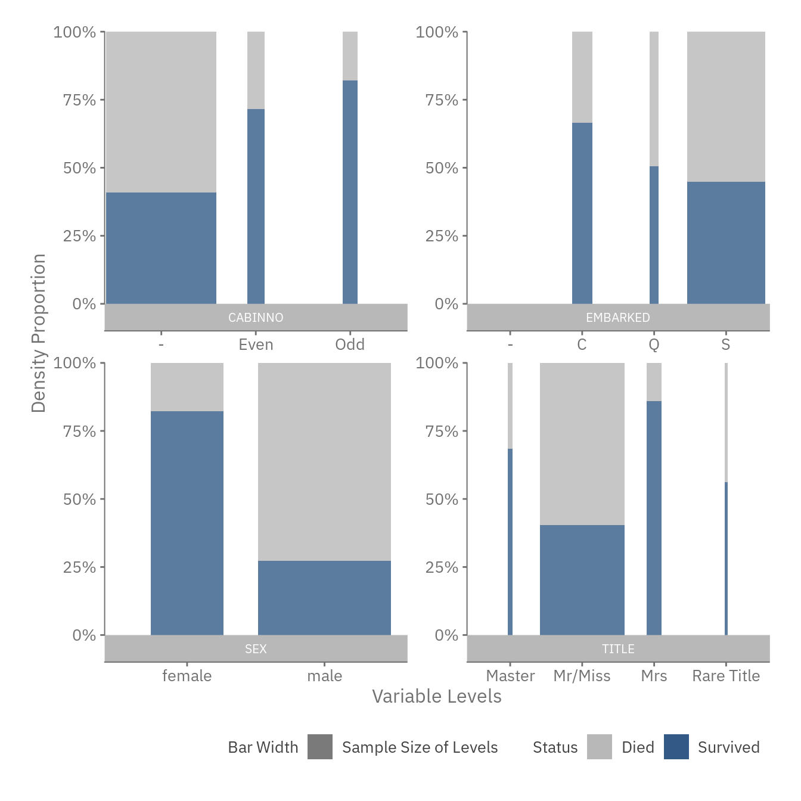
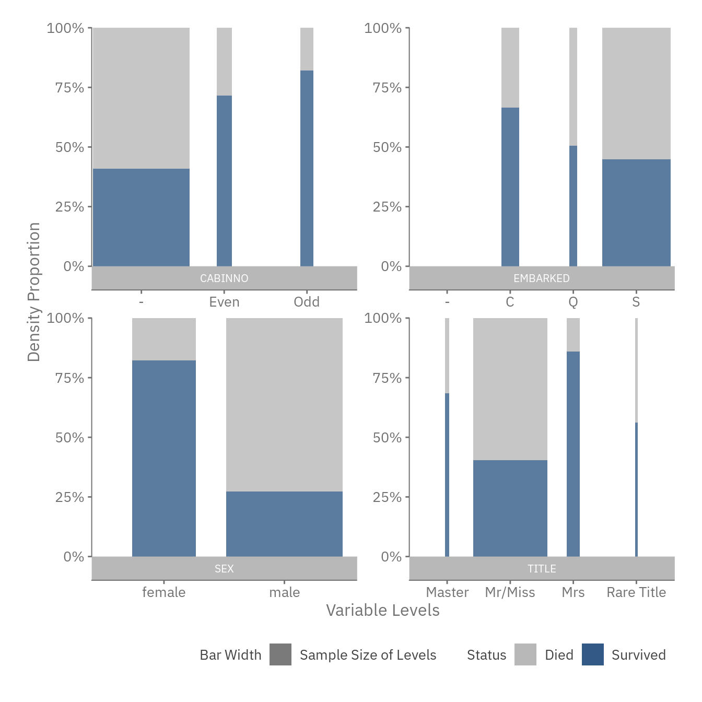
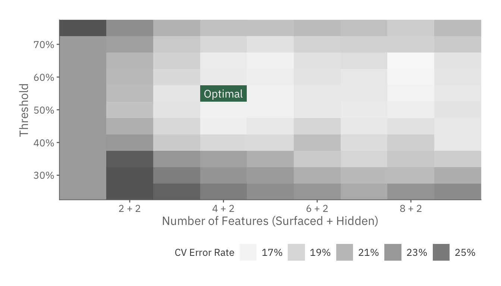

Estimating Survival Rate of Titanic Passengers
Problem Description
Set for its maiden voyage in 1912, RMS Titanic was then considered unsinkable due to its robust structure. After picking up passengers in Southampton, Cherbourg and Queenstown, the ship set sail towards New York. It was on their way there that the Titanic met its calamitous fate, crashing into an Iceberg and rendering more than 50% of the passengers lost.
There were many question marks concerning the events leading to and during the disaster. One of these was the evacuation process of the passengers. By analyzing personal details and disaster outcomes (survival/lost), we aim to:
- Understand the various factors affecting passengers’ survival likelihoods, and
- Predict a certain passenger’s survival likelihood given his/her background.
To skip the methodology and proceed directly to the summary of results, click here.
FYI: This problem was posed as an introductory challenge in Kaggle. The passengers are divided into two groups, one for training and the other for testing. The former contains both the passengers’ personal details and outcomes, while the latter only contains personal informaion. The aim of the project is to develop a robust model through the training set, and predict the survival of passengers in the testing set.
Preliminaries
First load the necessary packages for this exercise.
# Load default settings for R Markdown -- see file for more details
source("shared/defaults.R")
# Load some helper functions
source("shared/helper.R")
options(stringsAsFactors = FALSE)
load_or_install.packages("purrr","mgcv","DMwR")
data_dir <- "data/"
output_dir <- "output/"
si <- sessionInfo()
base_pkg_str <- paste0("Base Packages: ",paste(si[["basePkgs"]], collapse=", "))
attached_pkg_str <- paste0("Attached Packages: ",paste(names(si[["otherPkgs"]]), collapse=", "))
cat(paste0(base_pkg_str,"\n",attached_pkg_str))## Base Packages: grid, stats, graphics, grDevices, utils, datasets, methods, base
## Attached Packages: DMwR, lattice, mgcv, nlme, purrr, tidyr, pander, ggplot2, rlang, dplyr, knitrData Overview
We kick off by exploring the data that was provided:
training_set <- read.csv(paste0(data_dir, "train.csv"))
cols_summary <- data_overview(training_set)
pander(cols_summary, caption='Titanic Passengers Data - For more info, please visit <a href="https://www.kaggle.com/c/titanic/data" target="_blank">Kaggle</a>')| ColumnNames | Type | Examples | PctFilled |
|---|---|---|---|
| PassengerId | INTEGER | 1 // 2 // 3 // 4 // 5 | 100% |
| Survived | INTEGER | 0 // 1 | 100% |
| Pclass | INTEGER | 3 // 1 // 2 | 100% |
| Name | CHARACTER | Braund, Mr. Owen Harris // Cumings, Mrs. John Bradley (Florence Briggs Thayer) // Heikkinen, Miss. Laina // Futrelle, Mrs. Jacques Heath (Lily May Peel) // Allen, Mr. William Henry | 100% |
| Sex | CHARACTER | male // female | 100% |
| Age | NUMERIC | 22 // 38 // 26 // 35 // 54 | 80% |
| SibSp | INTEGER | 1 // 0 // 3 // 4 // 2 | 100% |
| Parch | INTEGER | 0 // 1 // 2 // 5 // 3 | 100% |
| Ticket | CHARACTER | A/5 21171 // PC 17599 // STON/O2. 3101282 // 113803 // 373450 | 100% |
| Fare | NUMERIC | 7.25 // 71.2833 // 7.925 // 53.1 // 8.05 | 100% |
| Cabin | CHARACTER | C85 // C123 // E46 // G6 // C103 | 22% |
| Embarked | CHARACTER | S // C // Q | 99% |
Based on the above table, we know that:
- Names are aggregated in the following format: Last_Name, Title First_Name. This suggests that some feature extraction needs to be performed.
- Columns such as Age, Cabin has missing data. This implies that we should either remove these columns, impute the data or choose a model that takes into account missing information.
Feature Selection
Extracting the Features
Some features, such as Pclass, Fare and Gender, have been nicely provided by the dataset. However, we could potentially unearth more features by pre-processing the data.
Titles
The titles of individuals are typically associated with social status. By extracting them from the Name column, we can potentially use them to predict survival likelihood.
prefix <- function(l) { as.character(sapply(l, ..(x) %:=% { unlist(strsplit(unlist(strsplit(x, ", "))[2],"\\. "))[1] })) }
title_set <- training_set %>%
mutate(Title = prefix(Name))
# Find Titles that Have Sufficient Sample Size For Model Estimation (>10)
common_titles <- title_set %>%
group_by(Title) %>%
summarise(N=n()) %>%
filter(N > 10) %>%
select(Title) %>%
{ c(.$Title) }
title_plot <- training_set %>%
mutate(Title = ifelse(prefix(Name) %in% common_titles, prefix(Name), "Rare Title")) %>%
mutate(MaleSurvivalRate = sum(Sex == "male" & Survived == 1) / sum(Sex == "male"),
FemaleSurvivalRate = sum(Sex == "female" & Survived == 1) / sum(Sex == "female"),
MixedSurvivalRate = sum(Survived) / n()) %>%
group_by(Title) %>%
summarise(CohortSize = n(),
SurvivalRate = sum(Survived)/n(),
Gender = sum(Sex == "male")/n(),
MaleSurvivalRate = MaleSurvivalRate %>% max,
FemaleSurvivalRate = FemaleSurvivalRate %>% max,
MixedSurvivalRate = MixedSurvivalRate %>% max) %>%
mutate(Gender = ifelse(Gender == 0, "Female",
ifelse(Gender == 1, "Male", "Mixed")),
BaselineRate = recode(Gender, Female=FemaleSurvivalRate, Male=MaleSurvivalRate, Mixed=MixedSurvivalRate)) %>%
arrange(Gender, desc(SurvivalRate)) %>%
mutate(Title = factor(Title, levels=Title %>% unique)) %>%
{
ggplot(.,aes(x=Title, y=BaselineRate, fill=Gender)) +
theme_lk() +
geom_bar(stat="identity",
alpha = 0.2,
width = .5,
position=position_nudge(x=-0.25)) +
geom_tile(aes(y=(BaselineRate + (SurvivalRate - BaselineRate) / 2.),
height=SurvivalRate-BaselineRate),
width = .5,
fill = (.$SurvivalRate - .$BaselineRate >= 0) %?% `@c`(green) %:% `@c`(red),
position = position_nudge(x=+0.2)) +
geom_text(data=subset(.,SurvivalRate - BaselineRate >= 0),
aes(label = "+" %|% scales::percent(SurvivalRate - BaselineRate),
y = SurvivalRate + 0.02),
nudge_x = 0.2,
family = `@f`,
color = `@c`(green)) +
geom_text(data=subset(.,SurvivalRate - BaselineRate < 0),
aes(label = scales::percent(SurvivalRate - BaselineRate),
y = SurvivalRate - 0.02),
nudge_x = 0.2,
family = `@f`,
color = `@c`(red)) +
scale_fill_manual(name = "Baseline Survival Rate",
values = c("Male"= `@c`(blue),
"Female" =`@c`(red),
"Mixed" = `@c`(purple))) +
scale_y_continuous(name="Survival Likelihood",
labels=scales::percent,
expand=c(0,0,0.02,0))
}
feature_title <- function(Name) { ifelse(prefix(Name) %in% common_titles,
ifelse(prefix(Name) %in% c("Mr","Miss"),"Mr/Miss",prefix(Name)), "Rare Title") }
title_plot
From the above chart, it seems that having a more distinguished status such as Master and Rare Title can increase your survivalhood. Hence, this feature should be included in the model.
Family Size
Interaction term with SibSp and ParentSize
feature_famsize <- function(Sibsp, Parch) { pmap(list(x=Sibsp, y=Parch), ..(x,y) %:=% { x + y + 1 }) %>% as.integer }
famsize_plot <- training_set %>%
mutate(FamSize = feature_famsize(SibSp, Parch)) %>%
group_by(FamSize) %>%
summarise(CohortSize = n(),
SurvivalRate = sum(Survived)/n()) %>%
{
ggplot(., aes(x=FamSize, y=SurvivalRate, size=CohortSize, weight=CohortSize)) +
theme_lk() +
geom_point(alpha=0.5, color=`@c`(ltxt)) +
geom_smooth(color = `@c`(1), se=FALSE, show.legend=FALSE, method = "loess") +
scale_x_continuous(name="Family Size") +
scale_y_continuous(name="Survival Likelihood", expand=c(0,0,0.02,0), labels=scales::percent) +
scale_size_continuous(name="Cohort Size")
}
famsize_plot
Cabin Deck
deck_to_index <- c("A"=1,"B"=2,"C"=3,"D"=4,"E"=5,"F"=6,"G"=7)
feature_cabin_deck <- function(Cabin) {
lapply(Cabin, ..(c) %:=% {
# Get All Cabins Specified
decks <- strsplit(c %>% { gsub("[0-9]","",.) }," ") %>% unlist %>%
# Convert Cabins to Numeric
sapply(..(f) %:=% {
deck_to_index[f]
})
# Assume a Leave No Man Behind Approach,
# In other words, your chances of survival is dependent on
# the person with the worst deck in the group
(length(decks) == 0) %?% NA %:% (decks %>% as.integer %>% max)
}) %>% unlist
}
cabin_deck_plot <- training_set %>%
mutate(CabinDeck = feature_cabin_deck(Cabin)) %>%
filter(!is.na(CabinDeck)) %>%
group_by(CabinDeck) %>%
summarise(CohortSize = n(),
SurvivalRate = sum(Survived)/n()) %>%
{
ggplot(., aes(x=CabinDeck, y=SurvivalRate, size=CohortSize, weight=CohortSize)) +
theme_lk() +
geom_point(alpha=0.5, color=`@c`(ltxt)) +
geom_smooth(color = `@c`(1), se=FALSE, show.legend=FALSE, method="loess") +
scale_x_continuous(name="Cabin Deck", breaks=deck_to_index, labels=setNames(names(deck_to_index),deck_to_index)) +
scale_y_continuous(name="Survival Likelihood", expand=c(0,0,0.02,0), labels=scales::percent) +
scale_size_continuous(name="Cohort Size")
}
cabin_deck_plot
Cabin Number
feature_cabin_no <- function(Cabin) {
sapply(Cabin, ..(x) %:=% {
if (x == "") { return(NA) }
num <- as.integer(strsplit(gsub("[A-z]","",x)," ")[[1]]) %% 2
if (is.nan(mean(num)) | length(which(num==0)) == length(which(num==1))) {
return(NA)
} else {
# Check if there is more even cabins or odd cabins
if (length(which(num==0)) >= length(which(num==1))) { return("Even") } else { return("Odd") }
}
})
}
cabin_number_plot <- training_set %>%
mutate(CabinNo = feature_cabin_no(Cabin),
CabinNo = ifelse(is.na(CabinNo),"Unspecified",CabinNo)) %>%
group_by(CabinNo) %>%
summarise(CohortSize = n(),
SurvivalRate = sum(Survived)/n()) %>%
mutate(CabinNo = factor(CabinNo, levels=c("Even","Odd","Unspecified"))) %>%
{
ggplot(., aes(x = SurvivalRate,y = 0,color=CabinNo,size=CohortSize)) +
theme_lk() +
theme(plot.margin = unit(c(0,0,0,-40),'pt'),
legend.position = c(1.,0.05),
legend.box.just = c(0.5,0.5),
axis.line.x = element_line(colour=NA),
axis.ticks.x = element_line(colour=NA),
axis.title.x = element_blank(),
axis.text.x = element_blank(),
axis.line.y = element_line(colour=NA),
axis.ticks.y = element_line(colour=NA),
axis.title.y = element_blank(),
axis.text.y = element_blank()
) +
scale_color_manual(name = "Room Type",
values = `@c`(),
guide = guide_legend(order = 1,override.aes=list(size=5),
nrow= 1)) +
scale_size_continuous(name = "Cohort Size",
range = c(5,20),breaks=c(100,300,600),
guide = guide_legend(order = 2,override.aes=list(alpha=0.5), nrow=1)) +
# Add X Axis Line
geom_segment(data = data.frame(1),aes(x=0.25, xend=0.8, y=0, yend=0),
size = 0.5,color=alpha(`@c`(ltxt),0.5),
arrow = arrow(length = unit(10,"pt"),type = "closed")) +
geom_text(data = data.frame(1),label = "Survival Likelihood",
x = 0.8,y = 0.02,family = `@f`,color = `@c`(ltxt),
size = 4.5,hjust = 1) +
scale_y_continuous(limits=c(-0.12, 0.05)) +
geom_point() +
geom_text(aes(y = c(-0.025,-0.02,-0.04), label=paste0(round(SurvivalRate*100,0),"%")),
size=4,color=`@c`(txt),family=`@f`)
}
cabin_number_plot
Feature Summary
preprocess_data <- function(data) {
data %>%
mutate(Title=feature_title(Name),
FamSize=feature_famsize(SibSp, Parch),
CabinDeck=feature_cabin_deck(Cabin),
CabinNo=feature_cabin_no(Cabin)) %>%
select(-PassengerId, -Name, -Ticket, -Cabin) %>%
# Substitute unknown continuous features with -1
mutate_if(is.numeric,
~ map(., ~ if (is.na(.)) { -1 } else {.}) %>% unlist) %>%
# Substitute unknown discrete features with "-"
mutate_if(~ !is.numeric(.),
~ map(., ~ if (is.na(.) | . == "") { "-"} else {.}) %>% unlist) %>%
# Set Factors for Discrete Features
mutate_if(~ !is.numeric(.),
~ factor(., levels=unique(c("-",.))))
}
features <- preprocess_data(training_set)
snapshot <- data_snapshot(features %>% mutate(Survived = Survived %>% factor), Survived)
suppressMessages(for (p in snapshot) {
{ p +
scale_fill_manual(name = "Status",
values=c(`0`=`@c`(ltxt,0.5),`1`=`@c`(1)),
labels=c(`0`="Died",`1`="Survived")) } %>% plot
}) 

Modeling Survival Likelihood
Model Selection
predict.mod_gam <- function(object, newdata, type="link", threshold=0.5, ...) {
# There is a Bug in GAM where if we use "by", predict will crash with the following error message:
# newdata is a model.frame: it should contain all required variables
# This is an attempt to fix that
gp <- interpret.gam(object$formula)
# if new data has no Survived column, append to fix the bug
if (!("Survived" %in% colnames(newdata))) {
newdata[,"Survived"] <- rep(-999,nrow(newdata))
}
newdata <- model.frame(gp$fake.formula, newdata)
if (type == "class") {
(predict.gam(object=object, newdata=newdata, type="response", ...) >= threshold) * 1
} else {
predict.gam(object=object, newdata=newdata, type=type, ...)
}
}
mod.gam <- function(data) {
# 1. Specify List of Features
all_features <- data %>% select(-Survived)
cont_vars <- all_features %>% select_if(is.numeric) %>% colnames %>%
map(~ "s(" %|% . %|%
", k=" %|% { (length(unique(data[,.])) >= 10) %?% -1 %:% length(unique(data[,.])) } %|%
" ,by=(" %|% . %|% " >= 0)*1)") %>% unlist
disc_vars <- all_features %>% select_if(~ !is.numeric(.)) %>% colnames
# Helper Function to Build Modified GAM Model
build_gam(vars) %:=% {
all_vars <- vars %>% paste0(collapse=" + ")
m.gam <- gam("Survived ~ " %|% all_vars %>% as.formula, data=data, family="binomial")
class(m.gam) <- c("mod_gam",class(m.gam))
if (max(summary(m.gam)$p.table[,2]) >= 10) { warning("High Standard Errors.") }
m.gam
}
# 2. Perform Forward Selection by comparing chi square statistic
cur_vars <- c()
rem_vars <- c(cont_vars,disc_vars)
last.gam <- build_gam(c("1"))
for (i in 1:length(rem_vars)) {
# We attempt to find out which variables to put in next.
# There are three extreme cases where we want to prevent the particular
# var from being inserted
# 1. If GAM calibration returns an error
# 2. If GAM calibration returns a warning (often no convergence)
# 3. If GAM calibration results in high standard errors
chi_sq <- sapply(rem_vars, ..(v) %:=% {
tryCatch({
m.gam <- build_gam(c(cur_vars,v));
(last.gam$deviance - m.gam$deviance) / ((m.gam$edf %>% sum) - (last.gam$edf %>% sum)) },
warning= ..(e) %:=% { return(-Inf) },
error= ..(e) %:=% { return(-Inf) })
})
# If all of the remaining vars cause errors, terminate forward selection
if (max(chi_sq) == -Inf) { break }
best.var <- chi_sq %>% which.max %>% names
cur_vars <- c(cur_vars, best.var)
rem_vars <- rem_vars[rem_vars != best.var]
last.gam <- suppressWarnings(build_gam(cur_vars))
}
# 3. Return Model
lapply(1:length(c(cont_vars, disc_vars)), ..(i) %:=% {
if (i > length(cur_vars)) { return(NULL) }
build_gam(cur_vars[1:i])
})
}
m.gam <- cache("m_gam", list(), ..() %:=% { mod.gam(features) })
highest_idx <- which(sapply(1:length(m.gam), ..(g) %:=% { !is.null(m.gam[[g]]) })) %>% max
f_list <- m.gam[[highest_idx]]$formula %>% as.character %>% {.[3] } %>% strsplit(" \\+ ") %>% unlist %>% { gsub(",[A-Za-z()0-9>=\\* -]*|s\\(","",.) }
cat("List of Features in Order of Selection: \n", paste0(f_list,collapse=", "))## List of Features in Order of Selection:
## Sex, Pclass, Title, SibSp, Parch, Age, CabinNo, FamSize, Fare, CabinDeckPerformance
Cross Validation
# Create Cross Validation Function
cv.mod.gam <- function(formula, train, test) {
# 1. Generate Modified GAM Models
gams <- mod.gam(train)
# 2. Get the MSE's for each GAM Model at different thresholds
output <- list()
cur_env <- environment()
thresholds <- 1:19*0.05
walk(thresholds, ..(t) %:=% {
err_rates <- sapply(gams, ..(i) %:=% {
if (is.null(i)) { return(Inf) }
{ predict(i, test, type="class", threshold = t) != test$Survived } %>%
{ length(which(.)) / length(.) }
})
names(err_rates) <- t %|% "," %|% 1:length(err_rates)
assign("output",append(output, err_rates), envir = cur_env)
})
output
}
# Run Cross Validation With Different Folds
# 5-Fold Focuses more on Variance Error while 10-Fold Focuses more on Bias Error
res.cv <- cache("res_cv", list(), ..() %:=% {
crossValidation(learner("cv.mod.gam"),
dataset(Survived ~ ., features),
cvSettings(s = 1))
}) %>%
# Reformat CV Results Into a Table
{ tmp_tbl <- .@foldResults %>% as.data.frame
tmp_tbl[,"Fold"] <- rownames(tmp_tbl)
tmp_tbl } %>%
gather("Params","Err_Rate",-Fold) %>%
mutate(Err_Rate = Err_Rate %>% unlist) %>%
group_by(Params) %>%
summarise(MER = mean(Err_Rate),
SE = sd(Err_Rate)/sqrt(n()))
res.cv[,"Threshold"] <- map(res.cv$Params, ~strsplit(.,",")[[1]][1]) %>% unlist %>% as.numeric
res.cv[,"N_Params"] <- map(res.cv$Params, ~strsplit(.,",")[[1]][2]) %>% unlist %>% as.numeric
opt.row <- res.cv %>% arrange(MER) %>% { .[1,] }
opt.threshold <- opt.row$Threshold
opt.n <- opt.row$N_Params
opt.gam <- m.gam[[opt.n]]
opt.gam$threshold <- opt.threshold
se <- opt.row$SE %>% as.numeric
res.cv[,"Min_SE"] <- res.cv[,"MER"] - opt.row$MER - se
onese.row <- res.cv %>% filter(Min_SE <= 0) %>% arrange(N_Params, (Threshold-0.5)^2) %>% { .[1,] }
onese.threshold <- onese.row$Threshold
onese.n <- onese.row$N_Params
onese.gam <- m.gam[[onese.n]]
onese.gam$threshold <- onese.threshold
cv_plot <- ggplot(res.cv %>% filter(MER != Inf & Threshold >= 0.25 & Threshold <= 0.75),
aes(x=N_Params, y=Threshold)) +
theme_lk() +
geom_tile(aes(alpha=ifelse(Threshold == opt.threshold & N_Params == opt.n, 99,
ifelse(Threshold == onese.threshold & N_Params == onese.n, 99, MER)),
fill=ifelse(Threshold == opt.threshold & N_Params == opt.n, "Optimal",
ifelse(Threshold == onese.threshold & N_Params == onese.n, "One SE", NA)))) +
geom_text(data=res.cv %>% subset((Threshold == opt.threshold & N_Params == opt.n) |
(Threshold == onese.threshold & N_Params == onese.n)),
aes(label=ifelse(Threshold == opt.threshold & N_Params == opt.n, "Optimal", "One SE")),
alpha = 1.,
color = `@c`(bg),
family = `@f`) +
scale_x_continuous(name = "Number of Features", breaks = 1:4 * 2,
expand = c(0,0)) +
scale_y_continuous(name = "Threshold", labels=scales::percent,
expand = c(0,0)) +
scale_alpha_continuous(name="CV Error Rate", range=c(0.05,1),
limits=c(NA,0.25), na.value=1,
labels=scales::percent,
guide=guide_legend(override.aes=list(fill=`@c`(ltxt,0.8)))) +
scale_fill_manual(values=c("Optimal"=`@c`(green), "One SE"=`@c`(blue)), na.value=`@c`(txt,0.8),
guide="none")
cv_plot
Test Set
test_set <- read.csv(data_dir %|% "test.csv")
test_features <- test_set %>% preprocess_data
save_predictions <- function(m.gam, id="opt") {
p_y <- predict(m.gam, test_features, type="class", threshold=m.gam$threshold)
predictions <- cbind(test_set %>% select(PassengerId), Survived=p_y)
write.csv(predictions,
file=paste0(output_dir,id,"_submission.csv"),
row.names = FALSE)
}
save_predictions(opt.gam)
save_predictions(onese.gam, "onese")
cat(paste0("Null Classifier\tTest Error Rate: ", scales::percent(1.-0.62679),"\n",
"Optimal GAM\t\tTest Error Rate: ", scales::percent(1.-0.77990),"\n",
"One SE GAM\t\tTest Error Rate: ", scales::percent(1.-0.79425),"\n"))## Null Classifier Test Error Rate: 37.3%
## Optimal GAM Test Error Rate: 22%
## One SE GAM Test Error Rate: 20.6%Interpretation
Thresholds
threshold_plot <- res.cv %>% filter(N_Params == onese.n) %>%
{
ggplot(., aes(x=Threshold, y=MER)) +
theme_lk() +
geom_point(aes(color=Threshold != onese.threshold,
shape = Threshold != onese.threshold,
size = Threshold != onese.threshold),
show.legend=FALSE) +
scale_color_manual(values=c(`@c`(red),`@c`(ltxt,0.5))) +
scale_shape_manual(values=c(4,16)) +
scale_size_manual(values=c(5,3)) +
geom_smooth(color=`@c`(1), fill=`@c`(ltxt,0.2), method='loess') +
scale_x_continuous(labels=scales::percent) +
scale_y_continuous(name="CV Error Rate", labels=scales::percent)
}
threshold_plot
Feature Trends
coeffs <- predict(onese.gam, features, type = "terms") %>% as.data.frame %>%
mutate(ID = rownames(.)) %>%
gather("Feature","Val",-ID) %>%
mutate(Feature = gsub(":[A-Za-z()>=0-9\\* ]*|\\)|s\\(","",Feature))
x_vals <- features %>% mutate(ID = rownames(features)) %>%
gather("Feature","X",-ID)
x_f_raw <- coeffs %>%
inner_join(x_vals, by=c("ID","Feature"))
x_f_tbl <- x_f_raw %>%
select(Feature, X, Val) %>%
filter(X != -1) %>%
group_by(Feature, X, Val) %>%
summarise(CohortSize=n()) %>%
ungroup() %>%
arrange(Feature, X)
cont_tbl <- x_f_tbl %>%
filter(grepl("[0-9\\.]+",X)) %>%
mutate(X = X %>% as.numeric)
cont_plot <- ggplot(cont_tbl, aes(x=X, y=Val)) +
geom_smooth(aes(weight=CohortSize), color=`@c`(ltxt,0.5),
linetype="dotted", method="loess") +
geom_point(aes(size=CohortSize), color=`@c`(1), alpha=0.8) +
theme_lk() +
scale_size_continuous(name="Cohort Size") +
scale_y_continuous(name="f(X)") +
facet_wrap(~toupper(Feature), ncol=2, scales="free", strip.position = "bottom")
cont_plot
discr_tbl <- x_f_tbl %>%
filter(!grepl("[0-9\\.]+",X)) %>%
arrange(Feature, desc(Val)) %>%
mutate(X = factor(X, levels=unique(X)))
discr_plot <- ggplot(discr_tbl, aes(x=X, y=Val)) +
theme_lk() +
geom_col(fill=`@c`(1,0.5), color=`@c`(1)) +
scale_y_continuous(name="f(X)", expand=c(0,0,0.01,0)) +
facet_wrap(~toupper(Feature), ncol=2, scales="free_x", strip.position = "bottom")
discr_plot
Feature Importance
imp_tbl <- x_f_raw %>%
group_by(Feature) %>%
#Normalize all features so that the weighted sum of f(feature) = 0
mutate(Val = abs(Val - sum(Val)/n())) %>%
ungroup() %>% group_by(ID) %>%
mutate(PctImpt = Val / sum(Val)) %>%
group_by(Feature) %>%
summarise(PctImpt = mean(PctImpt)) %>%
arrange(PctImpt) %>%
mutate(Feature = factor(Feature, levels=Feature))
imp_plot <- ggplot(imp_tbl, aes(fill=Feature, x=1, y=PctImpt)) +
theme_void() +
theme_lk(fmt_x = FALSE, fmt_y = FALSE) +
geom_col(position = position_stack(vjust = .5),
width=0.7, show.legend = FALSE) +
geom_text(aes(label=Feature, x=0.4),
size=3.5,
position = position_stack(vjust = .5),
family = `@f`,
color = `@c`(txt)) +
geom_text(aes(label=scales::percent(round(..y..,2))),
position = position_stack(vjust = .5),
family = `@f`,
color = `@c`(bg)) +
scale_fill_manual(values=`@c`(palette)(6) %>% rev) +
lims(x = c(0.,NA)) +
coord_flip()
imp_plot
blah blah blah
Summary of Results
Using data from the demographics and outcomes of titanic passengers, we have identified a few crucial factors that determines a passenger’s survivalhood.
These factors, ranked by importance, are:
- Passenger Class: 1st and 2nd class passengers accrue additional benefits, such as better amenities and cabin size within the Titanic. Ironically, the benefit most crucial to them was probably the one not advertised: exclusive access to the lifeboats.
- Fares Paid: This is connected to the 1st factor. The higher the fares that passengers pay, the more benefits they accrue, hence the more premium they possess during a sinking disaster.
- Title: Someone with an esteemed title have more privileges than a lay individual on almost every occassion, including this life-or-death situation.
- Family Size: Someone with dependents (whether children or a wife) has an advantage of getting into the lifeboats since they can “tag-along” with their dependents.
- Age: The younger the passenger, the less space he/she occupies, hence there are more opportunities for him/her to board the lifeboats.
- Sex: During that era, females were prioritized over males as a form of gentlemanly behavior. This behavior seems to be translated during the sinking disaster, where females were given preference over men to board the lifeboats first.
Using passenger class as a proxy for wealth, we calculated the survival likelihood of each class.
The chart above shows that the more premium the class, the more likely passengers were to survive. One reason explaining this could be that 1st class passengers were first in line to access the lifeboats, while 3rd class passengers were left to fend for themselves.
Similarly, we also noticed this phenomenon in fares. Passengers who were paying more have a higher survival likelihood than others.
The data provides us with a list of titles under the Name column. Each title is associated with a gender (with the exception of one), as shown below:
Other than Mr, Miss, Mrs and Master, all other titles are not common to the average passenger. To navigate the small sample size, we will group all of these other titles under Rare Title.
With the following modifications, we can then assess the survival likelihood of each title and gender:
All females, regardless of their titles, have higher survival likelihoods than males. In addition, having a title other than Mrs, Miss or Mr, elevates the survival likelihood of the individual. One reason explaining this could be that females and esteemed individuals were given early access to escape the Titanic.
The chart below shows how survival likelihood changes with age.
Among those passengers whose age were populated, we can see that younger individuals are more likely to survive. One possible explanation could be because babies and toddlers occupy less space (and hence easier to find seats within the lifeboats).
However, older people, especially those more than 60 years old, are less likely to survive. This is probably due to their lack of agility in responding to the crash.
Typically, we would expect that the more family members, the more spaces the family unit would need in the lifeboat, hence reducing the survival probability of each member as a whole.
However, contrary to expectations, the data shows that the larger the family size, the more likely an individual will survive:
This counterintuitive relationship can be explained through 3 factors:
Child Privilege: If you have a larger family size, there is an increased probability that you are a child. For example, a family of 5 will more likely include 2 adults and 3 children, rather than 5 adults. Furthermore, from Insight 3, we know that children have higher survival likelihoods than adults. Hence, by the transitive property, it follows that:
Larger Family Size -> More Likely To Be A Child -> More Likely to Survive.
The benefits accrued by this privilege, shown in red, can be accounted for when we compare data from all passengers against data from only the adults (> 15 years old)Parental Privilege: The larger the family size, the more likely you are to be a parent. Parents can utilize their children’s lifeboat guarantee to tag-along and get themselves a space. These benefits, which are represented in green, surface when we compare the survival likelihoods of adults with children and adults with none.
Husband Privilege: As a male, having a family size of 2 and no children may guarantee you better odds since you can tag along with your wife (see Insight 2) to obtain a lifeboat seat. These benefits, shown in blue, can be accounted for when we compare between males and females that do not have children.
Passengers staying further away from the lifeboats will have more difficult time surviving, hence we should assume that the cabin positions will have an impact on their survivalhood. However, given that passengers may not be at their cabins during the time of crash, this impact may not be significant.
A more detailed deck plan can be found in the Encyclopedia Titanica. As shown from the deck plans, the letter of the cabin represents the floor of the room, while the odd and even numbers corresponds to the left and right side of Titanic respectively.
Cabin Floors
From the chart above, we know that Cabins B to E has a higher likelihood of survival compared to other cabins. This implies that the position of cabins play a role in determining whether a passenger survive.
Cabin Numbers
It is pretty clear that those who stay in the odd rooms are more likely to survive than those in the even rooms.
In conclusion, cabin floors and cabin numbers, when available, can determine a passenger’s survival likelihood.
The map above indicates that those who embarked at Cherbough are more likely to survive. This is a puzzling observation as where the passenger embarks should not have an impact of what is happening on the Titanic.
However, by studying the demographics of the passengers embarking at each port, we discovered that a higher proportion of Cherbough are 1st class passengers. This would explain the confounding observation noted earlier.
Modeling Survival Likelihood
Rationale
While the preliminary insights were useful in identifying survival factors, we also need a way to quantify the importance of each factor. Building a predictive model would achieve that goal.
Since this is a classification problem (for each passenger, we either group them as “Survived” or “Died”), models such as logistic regression and decision trees come to mind. However, for the purposes of this study, the Random Forest algorithm was used, as it is more robust and there already exists a useful function importance that can assess the various factors intuitively.
Preparation
Variables Considered
Based on the above insights, we will be adding the following factors to predict the survival likelihood of an individual.
| Feature | Variable Type | Insights Supporting the Feature |
|---|---|---|
| Pclass | Continuous | Insight 1 |
| Fare | Continuous | Insight 1 |
| Sex | Categorical | Insight 2 |
| Title | Categorical | Insight 2 |
| Age | Continuous | Insight 3 |
| FamilySize | Continuous | Insight 4 |
*Initially, CabinFloor, CabinNumber and Port of Embarkation were used as predictors of survival likelihood. However, the accuracy of the model fell with the inclusion of these features due to over-fitting. This implies that we may be over-inflating the impact of embarkation port, while the cabin data is too sparse to yield any useful information.
Populating Age
Before inputting the raw data into a model, we have to ensure that the data is in a well-defined state. One of the fixes we need to make is to populate any unidentified Age values.
We will use the following variables as predictors of Age:
Listed below is a summary of the regression.
Due to our careful selection of variables, all of the coefficients are statistically significant with a 5% significance level. This suggests that the variables are all good predictors of Age.
Populating Others
Other than age, we also need some kind of sanity checks to ensure that all data has been populated. Since the rest of columns are either too varied, or require only a small set of missing values to be filled, we will populate then with category “Unknown” or the number -1.
Putting It All Together
After resolving the missing data, we can now create a process that takes in the raw data and output a cleansed data that is ready for model consumption.
Below is an example of the data after cleansing:
The Model
Prior to constructing the random forest model, we will split the training set into two unequal groups, with 80% of the data for training and the other 20% for testing purposes. The larger partition is then used to construct a random forest model.
Listed below is a summary of the model.
Assessing Performance
We use three different indicators to test the accuracy of the model:
- OOO: The accuracy calculated internally within the model,
- 20% Testing Group: The accuracy when used to predict the remaining 20% of the data not used in calibration,
- Kaggle’s Testing Set: The accuracy when used to predict the test set provided by Kaggle.
As shown above, the model managed to predict Kaggle’s testing set relatively well, with a score below the 18th percentile in the Leaderboard (at time of submission). There is also only a difference of 2-4% between our internal (20% Testing Group) and external (Kaggle’s Testing Set) performance, suggesting that the model is not overfitted.
Assessing Factors
Since the model is robust and reliable, we can now derive some knowledge from the model. We will reference the mean decrease in accuracy score to determine the importance of each factor.
The chart below maps the mean decrease in accuracy for each feature in the model:
Using a 1% significant level as the baseline, we conclude that all the factors are statistically significant. This means that for each of the factor, there is less than a 1% chance that the influence on survival likelihood is a result of randomness.
Moreover, the model also provides us a picture of which factors are more important than others. For example, characteristics associated with wealth (Fare and Passenger Class) play more important roles than the passengers’ demographics (Title, Age and Gender).